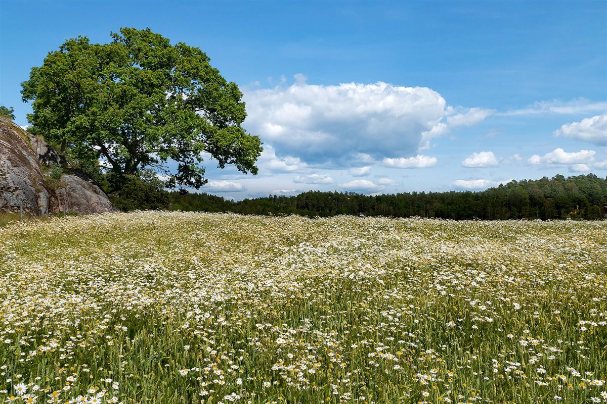

アクセス
滋賀県草津市上笠2丁目10-5
営業時間: 準備中(お問い合わせください)
地図
表示位置が実際と異なる場合は、お電話でご確認ください
交通・設備
- 交通手段・設備に関する情報
- 準備中(お問い合わせください)

お越しの前に、お電話でご確認いただくと安心です
電話する 077-516-9597写真はフリー素材のイメージで、ベーカリー エレパントの実際の店舗・商品ではありません。他地域で撮影されたもの、撮影地が不明のものを含みます。
滋賀県草津市上笠2丁目10-5
営業時間: 準備中(お問い合わせください)
表示位置が実際と異なる場合は、お電話でご確認ください

お越しの前に、お電話でご確認いただくと安心です
電話する 077-516-9597写真はフリー素材のイメージで、ベーカリー エレパントの実際の店舗・商品ではありません。他地域で撮影されたもの、撮影地が不明のものを含みます。